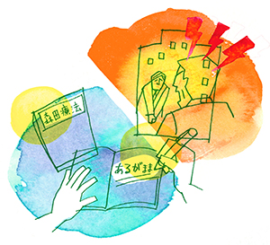

気分障害（うつ病、気分変調症）4
神経質は自分の一部
（抑うつ症状、不安神経症）
古賀 良介（仮名）40代・会社員（エンジニア）（体験フォーラム会員）
精神的な不調のはじまり
初めて精神的な不調を感じたのは数年前（X年）の冬頃だったと思います。
X年は、私にとって最初の転機でした。
当時私はエンジニアとして一線で働いていました。顧客や上司からの信頼も実感しており、やりがいを感じて仕事に邁進していました。そのような中、リーダーに昇進することになりました。私自身ますますやりがいに燃え、また昇進後の責任も受け止める自信にあふれていました。
昇進すると、20数名のメンバーを配下に、グループ運営の方針を決め、計画し、最適な要員アサインとメンバーの業務遂行管理が私のミッションとなりました。
昇進して3カ月がすぎ、いま一つ私の想いが結果につながらないことに焦りを感じ始めました。そして半年が過ぎました。それがX年の冬頃のことです。顧客室長に呼び出され、成果が出ないことを叱責され、自分の不甲斐なさに失望し続けていました。顧客室長に呼び出された後、今度は、上司の部長に呼び出され、叱責を受ける日々になっていました。「今に見ていろ、いつかきっと成果を見せつけてやる」その想いは非常に強いものでしたが、その想いとは裏腹に、成果はますます遠ざかり、時間ばかりが過ぎていくのでした。
私のグループは20数名全員が顧客のプロジェクトに入り、エンジニアとして働いています。ところが、顧客との関係が悪化し、顧客からは「グループをプロジェクトから外さねば仕方がない」と通告を受けました。プロジェクトから外されれば20数名は食い扶持を失います。私は自分の部下の雇用を守れなくなることを非常に恐れ、部下達に申し訳なく、合わせる顔がない思いでした。私は懸命に顧客との関係改善を模索しましたが、それは完全に空回りでした。
今思えば、私は顧客、上司、メンバーに求められていたことを黙殺し、私のやりたいことを実行しようとしていました。当時は誰にも理解されずとも、いずれ結果で納得させればよいと思っていました。完全に一人よがりでした。まさしく、自分の理想と現実の自分が一致しない、自分の内々に注意が集中し、あけくれて、求められる行動をしない…神経質の特性が悪い方に出た典型例だと今は思います。
X+1年の梅雨頃、妻に「精神科」受診を勧められ、精神科を受診しました。すると「うつ病」との診断を受け、抗鬱剤が処方されました。しかし、このうつ病の診断も、私が後に転勤になる等でうやむやになりました。同じころ、私の父が肺炎になり生死の境をさまよいました。私は急遽帰郷し父を見舞いました。幸運にも病状は回復し、2カ月程で退院することができました。かねてから年老いた両親のことは気になっていたので、このことをきっかけに、私は部長に転勤をお願いし、少しでも両親の近くに住まえるようにしました。
転勤による二度目の転機
私は職場の問題をやりっ放しにし、逃げるように転勤することになりました。当時の私は、「これは逃げているのか？」と何度も自問自答しました。私の職場の問題は、実績の豊富な先輩に委ねることになりましたので、その点は安心していました。結局、その後、顧客との関係は私の後任がきちっと決着をつけてくれています。
私はX+1年冬に転勤しました。これが2度目の転機です。
転勤先では前任地での私の失敗は知れ渡っていませんでした。私も一度は失敗したが、ここで心機一転、0からのやり直しと気合を入れ直しました。前任地ではうつ病と診断された私もすっかり気分がよくなりました。
ところが、半年を過ぎるころ、だんだんと人間関係に悩むようになりました。私はエンジニアとして働いてましたが、どうしてもB氏（私の1年先輩）と協力して業務を推進していく必要がありました。ところが、B氏は私のことをよく思っていないらしく、私を露骨に無視したり罵倒したりしました。B氏の上司や同僚にも相談しましたが、結局のところ事態は変わりませんでした。そして再び成果をあげることができなくなりました。 これはB氏が悪いのではなく、私に問題があるからこのような扱いを受けるのだと思いました。
人間性の改善を目指すが…
前任地でも失敗しているし、これはやはり私個人の人間性に問題があるのだと。そうであるのなら、それを直さねばならない。そう思いカウンセリングを受けました。カウンセリングは傾聴を主体とするもので、X+2年の夏から1年ほど月一度通いました。ところが、カウンセラーは私の人間性の問題を指摘することはなく、ストレスを客観視し、受け流せるように指導しました。
カウンセリングだけでは状況が好転しないため、X+3年の夏からは、再び精神科に通うようになりました。その時の診断名は、「不安神経症」でした。この時より投薬を再開しました。またカウンセリングも精神科に常駐するカウンセラーに切り替えました。やはり傾聴を主体とするカウンセリングで、ここで私の人間性に触れることはなく、やはり自分の感情を客観視するような指導を受けました。しかし月一度話を聞いてもらうだけでどうにかなるものでもないと思いました。
X+4年ころより認知行動療法を独学し実践してみました。しかし、論理で気分をコントロールしようとするこの方法は、論理で納得できるときは効果があるものの、自分で実態のわからない根拠のはっきりしないときの感情のコントロールは独学では難しいものでした。結局、いずれの心理療法にも失敗しました。
業務の成果はあがらず、私は赴任先での業務を外され、前任地へ戻されることになりました。X+5年の4月です。 両親のこともあり、また妻や子どものこともあり、家族は残し私だけが単身赴任することとしました。私も結構な年で、退職をかけて転勤を拒むことはできませんでした。
X+5年春より単身赴任が始まりました。
無期限の単身赴任。いつまで続くのか。私が過去2度に渡って失敗を重ねたのはなぜか。解のない自問が昼夜問わず私にまとわりつきます。私に仕事を任される度、「どうせ私にはできない」「私はきっとまた失敗する」という内の声が私を強い力でネガティブ方向に引っ張りこもうとしていました。私にまとわりつくものを振り切れず、ネガティブ方向へ引っ張る力に抗いきれず、私は次第に疲れていきました。
X+7年の9月頃までは、やはり様々な心理療法を試しました。もがいているうちに、森田療法が目にとまり、X+7年10月に体験フォーラムに参加しました。
森田療法に出会い、体得から得られた納得
森田療法を勉強すると、どうも沸き起こる感情をそのままに、眼の前のことに集中しなさいということらしい。しかし、今一つ納得感がありません。感情は放っておいて、眼の前の行動を心がけても楽にはならない。それでもこれまでよりは行動できるようにはなっていたのですが…。
このようなもやもやを払拭したく、X+8年4月より日記指導をいただくようになりました。管理人さんをはじめ神経質の先輩方から、森田先生の書籍からの引用や、気づきをコメントいただきました。森田療法に出てくる言葉はある程度覚えてはいました。ですが、日記をご指導いただくと、それがいかに頭だけの理解だったかということを思い知らされました。

段々と森田療法という治療法を単に学ぶのではなく、森田先生の生き方そのものを学んでいるのだと気づきました。私の場合、「あるがまま」とか「境遇に従順」とか言葉から先に覚えると、勘違いのもとでした。ある程度体感したのち、この状態を「あるがまま」というのか、「境遇に従順」というのかと、自分が感じた感覚を言葉でいうとそうなるのか…ということを思いました。これは日記指導をいただいて初めて気づいたことです。
X年冬から森田先生の教えに出会うまでずっと、仕事で成功することで負の連鎖を断ち切らねばならぬ、そのためには生き生きと仕事をしていかねばならぬ…と固く信じてきました。ところが、思い返すとこれは、森田先生のおっしゃる「循環論理」であり、「思想の矛盾」だったのだと振り返ることができます。
森田先生の教えを学んで、劇的に何か変わったということはありません。ただ、以前のように無理して現実を敵に回すことはしなくなりました。これは決して諦観ではありません。色々な意味で、自分が今できることに集中するという感覚です。私は自分の神経質とともに、これからの人生を切り開いていく所存です。
最後に、このようなフォーラムを運営されている管理人さんをはじめスタッフの方、フォーラムでコメントを下さった神経質ファミリーの皆さま、本当にありがとうございました。顔も合わせたことのない私を、皆さまが親身になって助けていただいたこと、本当に感謝いたします。